Durante gran parte del siglo XX, la educación estuvo sustentada sobre una concepción relativamente homogénea de la inteligencia. ¿Recuerdas que ya revisamos la teoría de los paradigmas? Bueno, en cuanto a la inteligencia también existió uno muy influyente: el paradigma psicométrico. En éste predominó la idea de que la inteligencia constituía una capacidad única, general y cuantificable mediante pruebas estandarizadas de coeficiente intelectual (CI). Esta perspectiva orientó no solamente las investigaciones psicológicas, sino también las prácticas educativas, privilegiando aquellas habilidades relacionadas con el razonamiento lógico, el lenguaje y la memoria, mientras otras capacidades humanas permanecían relegadas o eran consideradas secundarias. Howard Gardner cuestionó profundamente este paradigma al proponer que la inteligencia no puede reducirse a una única facultad mental, sino que constituye un conjunto de capacidades relativamente autónomas que permiten a las personas resolver problemas y crear productos valiosos dentro de contextos culturales específicos (Gardner, 1994).
La teoría de las inteligencias múltiples representó un cambio paradigmático para la psicología del aprendizaje y para la pedagogía contemporánea porque desplazó el interés desde la medición estandarizada hacia la comprensión de la diversidad cognitiva. Desde esta perspectiva, se plantea que cada persona posee un perfil único de potencialidades que se desarrolla mediante la interacción entre factores biológicos, experiencias personales, contextos culturales y oportunidades educativas. En consecuencia, aprender deja de entenderse como un proceso uniforme para convertirse en una experiencia profundamente diferenciada, donde intervienen múltiples formas de percibir, comprender, representar y transformar la realidad.
Este cambio resulta especialmente significativo dentro de los enfoques contemporáneos de la metacognición y la conducta autorregulada ya que si cada uno de nosotros aprendemos de manera distinta, también desarrollamos diferentes estrategias para planificar, supervisar y evaluar nuestro propio aprendizaje. Entonces, la autorregulación ya no depende únicamente de procesos cognitivos generales, sino de la capacidad que poseemos cada uno de nosotros para reconocer nuestras fortalezas intelectuales, identificar nuestras limitaciones y utilizar conscientemente nuestros recursos cognitivos y emocionales que resulten más adecuados para enfrentar problemas complejos.
Paralelamente, durante las últimas décadas la investigación educativa ha mostrado que el aprendizaje no depende exclusivamente de las capacidades intelectuales. Con ello, se planteó que la motivación constituye uno de los principales motores de la construcción del conocimiento, ya que determina la dirección, persistencia y profundidad con que cada una y uno de nosotros participamos en las actividades académicas. Así, veremos que aprender implica un esfuerzo sostenido que requiere curiosidad, interés, compromiso y sentido personal. Por ello, la búsqueda del conocimiento no puede explicarse únicamente mediante variables cognitivas, sino también mediante factores afectivos, sociales y culturales que orientan el comportamiento humano.
En esta misma línea, la inteligencia emocional adquiere una importancia creciente dentro de nuestra casa de estudios, ya que las emociones influyen directamente sobre nuestra atención, nuestra memoria, cómo tomamos decisiones, la creatividad y la resolución de problemas. Es por ello que, lejos de constituir elementos opuestos a la racionalidad, las emociones participan activamente en todos los procesos cognitivos. Como verás, si eres capaz de reconocer, comprender y regular tus emociones dispondrás de mejores condiciones para afrontar situaciones de incertidumbre, perseverar frente a las dificultades y desarrollar aprendizajes profundos y significativos.
Ahora bien, desde la perspectiva del pensamiento complejo, como hemos venido viendo, estas tres dimensiones -inteligencias múltiples, motivación e inteligencia emocional- no deben analizarse de manera aislada pues constituyen componentes interdependientes de un mismo sistema de aprendizaje donde cognición, emoción, contexto social y cultura interactúan permanentemente mediante relaciones de retroalimentación. En consecuencia, se trata de que te conviertas en un estudiante capaz de aprender durante toda tu vida y para ello es importante que comprendas la diversidad de las capacidades humanas, fortalezcas la motivación intrínseca y desarrolles competencias emocionales que favorezcan tu autonomía intelectual y la reflexión metacognitiva.
Howard Gardner: Inteligencias Múltiples.
La propuesta de Gardner surge en un contexto en el que predominaban las investigaciones sobre el coeficiente intelectual (CI). Desde principios del siglo XX, autores como Charles Spearman habían defendido la existencia de un factor general de inteligencia (factor g) que explicaría el desempeño de las personas en cualquier actividad intelectual. Bajo este paradigma, las diferencias individuales podían resumirse mediante una puntuación única obtenida a partir de pruebas psicométricas. Este enfoque tuvo una enorme influencia en los sistemas educativos, favoreciendo modelos de enseñanza centrados en la transmisión uniforme del conocimiento y en la evaluación mediante exámenes estandarizados.
Gardner identifica importantes limitaciones en esta perspectiva. En primer lugar, observa que las pruebas tradicionales privilegian únicamente determinadas habilidades relacionadas con el lenguaje y el razonamiento lógico-matemático, ignorando numerosas capacidades que poseen gran valor adaptativo y cultural. En segundo lugar, señala que el éxito obtenido en una prueba escrita no necesariamente predice la capacidad para desenvolverse eficazmente en la vida cotidiana, crear obras artísticas, liderar grupos humanos o comprender los propios procesos emocionales. Finalmente, advierte que las distintas culturas valoran formas diversas de inteligencia, lo que hace imposible establecer un único criterio universal para medirlas.
Esta crítica representa un auténtico cambio epistemológico. En lugar de preguntar "¿qué tan inteligente es una persona?", Gardner propone cuestionar "¿de qué maneras es inteligente?". El desplazamiento parece sencillo, pero modifica radicalmente la comprensión del desarrollo humano. La inteligencia deja de entenderse como una cantidad fija para convertirse en un conjunto dinámico de potencialidades susceptibles de desarrollarse mediante la educación y la experiencia.
La inteligencia como capacidad para resolver problemas culturalmente relevantes
Uno de los mayores aportes de Gardner consiste en redefinir el propio concepto de inteligencia. En su propuesta, una inteligencia es definida como la capacidad de resolver problemas o elaborar productos que sean valiosos en uno o más contextos culturales. Esta definición incorpora tres elementos fundamentales:
1. La inteligencia posee una función adaptativa. No constituye una propiedad abstracta de la mente, sino una capacidad orientada a resolver situaciones reales. Toda inteligencia se manifiesta mediante acciones concretas que permiten enfrentar problemas específicos del entorno.
2. Incorpora explícitamente la dimensión cultural. Una capacidad solamente puede considerarse inteligencia cuando adquiere valor dentro de una comunidad determinada. Así, las habilidades necesarias para navegar entre arrecifes del Pacífico, interpretar partituras musicales, desarrollar modelos matemáticos o coordinar equipos de trabajo representan formas igualmente legítimas de inteligencia, aunque pertenezcan a ámbitos completamente distintos.
3. La inteligencia implica creación. No se limita a reproducir información previamente adquirida, sino que permite generar soluciones novedosas, interpretar fenómenos complejos y producir conocimiento original. Esta concepción aproxima la teoría de Gardner a las actuales perspectivas sobre creatividad, innovación y pensamiento complejo, donde aprender significa transformar activamente la información y no únicamente memorizarla.
A diferencia de otras propuestas psicológicas basadas exclusivamente en pruebas estadísticas, Gardner construye su teoría integrando evidencias provenientes de múltiples disciplinas. Entre ellas destacan la neuropsicología, la psicología evolutiva, la antropología, la biología evolutiva, la lingüística, la historia cultural y los estudios sobre personas con talentos excepcionales o lesiones cerebrales.
La neuropsicología aportó uno de los argumentos más sólidos para cuestionar la existencia de una inteligencia única. Diversas investigaciones mostraban que determinadas lesiones cerebrales podían afectar gravemente una capacidad específica -como el lenguaje o la orientación espacial- sin comprometer otras funciones intelectuales. Estos hallazgos sugerían la existencia de sistemas cognitivos relativamente independientes.
Por otra parte, los estudios transculturales evidenciaban que distintas sociedades desarrollan y valoran habilidades muy diferentes. Mientras algunas culturas privilegian el razonamiento lógico, otras conceden mayor importancia a la orientación espacial, la memoria oral, la música o las habilidades sociales. Ello demuestra que la inteligencia no puede entenderse al margen del contexto histórico y cultural.
Asimismo, Gardner analizó casos de personas con capacidades extraordinarias -como músicos prodigio, matemáticos precoces o artistas con talentos excepcionales- junto con otras que presentaban discapacidades cognitivas específicas. Estas observaciones reforzaban la idea de que las distintas capacidades intelectuales pueden desarrollarse de forma desigual, configurando perfiles cognitivos únicos e irrepetibles.
La principal aportación de Howard Gardner (2021) no consistió únicamente en afirmar que existen diversas formas de inteligencia, sino en proponer un modelo explicativo que permite comprender la extraordinaria diversidad con la que los seres humanos conocen, interpretan y transforman la realidad. En lugar de asumir que todas las personas aprenden mediante los mismos procesos cognitivos, Gardner sostiene que cada individuo desarrolla un perfil intelectual particular resultado de la interacción entre su herencia biológica, las oportunidades culturales, las experiencias educativas y los contextos sociales en los que participa. Esta concepción representa una ruptura con las visiones uniformadoras del aprendizaje y constituye uno de los fundamentos más sólidos para comprender la metacognición desde una perspectiva compleja.
Uno de los aspectos más innovadores de esta teoría consiste en que ninguna inteligencia opera de manera completamente aislada. Aunque Gardner las presenta como sistemas relativamente autónomos para fines analíticos, reconoce que en la práctica funcionan de manera integrada y coordinada. Resolver un problema científico, por ejemplo, requiere razonamiento lógico-matemático, pero también comprensión lingüística para interpretar información, capacidades espaciales para visualizar relaciones, habilidades interpersonales para trabajar colaborativamente e inteligencia intrapersonal para perseverar frente a las dificultades. De esta forma, la inteligencia se convierte en un sistema dinámico cuyas partes interactúan permanentemente, anticipando los principios que posteriormente desarrollaría el pensamiento complejo respecto a la emergencia y la interdependencia de los fenómenos cognitivos.
Las principales inteligencias identificadas son:
• La inteligencia lingüística
La inteligencia lingüística hace referencia a la capacidad para utilizar el lenguaje oral y escrito con precisión, creatividad y eficacia. Comprende la sensibilidad hacia los significados de las palabras, la estructura gramatical, la riqueza semántica, la capacidad argumentativa y la utilización del lenguaje como herramienta para comunicar, persuadir, interpretar y construir conocimiento. Gardner identifica esta inteligencia como una de las más valoradas por los sistemas escolares tradicionales debido a que la mayor parte de las actividades académicas se desarrollan mediante la lectura, la escritura y la comunicación verbal.
Sin embargo, desde la teoría de las inteligencias múltiples, la competencia lingüística deja de ser considerada el único indicador del desarrollo intelectual. Un estudiante con elevada capacidad verbal puede presentar dificultades para comprender relaciones espaciales o interpretar emociones propias y ajenas, mientras que otro con menor fluidez verbal puede destacar extraordinariamente en ámbitos musicales, corporales o naturales. Esta observación cuestiona los modelos educativos que identifican el rendimiento académico exclusivamente con la habilidad para expresarse mediante el lenguaje.
La investigación reciente continúa confirmando la importancia de esta inteligencia en el ámbito universitario. El estudio realizado por Rondan Zamata y colaboradores (2022), encontró que la inteligencia verbal-lingüística constituye una de las capacidades predominantes entre estudiantes universitarios de ciencias de la salud, asociándose con habilidades de comunicación, liderazgo y transmisión efectiva del conocimiento.
• La inteligencia lógico-matemática
Tradicionalmente considerada el paradigma de la inteligencia, la inteligencia lógico-matemática comprende la capacidad para identificar patrones, establecer relaciones causales, formular hipótesis, resolver problemas abstractos y construir razonamientos deductivos e inductivos. Gardner reconoce su enorme importancia para el desarrollo científico y tecnológico, pero cuestiona que represente la totalidad de las capacidades intelectuales humanas.
Esta inteligencia resulta indispensable para el pensamiento analítico, la modelización de fenómenos y la resolución sistemática de problemas. No obstante, incluso las investigaciones científicas más rigurosas requieren de otras formas de inteligencia para interpretar contextos sociales, comunicar resultados o generar soluciones creativas. Desde esta perspectiva, la lógica constituye una dimensión necesaria, pero insuficiente, del conocimiento humano.
• La inteligencia espacial
La inteligencia espacial se refiere a la capacidad para representar mentalmente objetos, comprender relaciones espaciales, visualizar transformaciones geométricas y construir modelos tridimensionales. Arquitectos, diseñadores, ingenieros, cirujanos, pilotos y artistas visuales suelen desarrollar esta inteligencia de manera particularmente elevada.
Gardner destaca que esta capacidad trasciende la simple percepción visual, ya que implica manipular representaciones internas del espacio y anticipar mentalmente las consecuencias de determinadas transformaciones. Esta habilidad resulta fundamental para comprender fenómenos complejos mediante diagramas, mapas conceptuales, modelos sistémicos y representaciones gráficas, recursos ampliamente utilizados en la enseñanza contemporánea.
• La inteligencia musical
La inteligencia musical comprende la sensibilidad hacia el ritmo, la melodía, la armonía y la estructura sonora. Gardner sostiene que esta capacidad posee una base neurobiológica específica y puede desarrollarse independientemente de otras formas de inteligencia. La música constituye uno de los lenguajes universales de la humanidad y ha acompañado prácticamente todas las culturas conocidas.
Desde el punto de vista educativo, la inteligencia musical favorece procesos relacionados con la memoria, la creatividad, la regulación emocional y el reconocimiento de patrones complejos. Numerosas investigaciones muestran que el aprendizaje musical fortalece funciones ejecutivas relacionadas con la atención, la planificación y la flexibilidad cognitiva, elementos estrechamente vinculados con la metacognición.
• La inteligencia corporal-cinestésica
La inteligencia corporal-cinestésica consiste en utilizar el cuerpo con precisión para resolver problemas, expresar ideas o producir obras. Deportistas, bailarines, cirujanos, artesanos y actores constituyen ejemplos representativos de esta forma de inteligencia.
Su reconocimiento implica superar la tradicional separación cartesiana entre mente y cuerpo. Gardner demuestra que la cognición también se expresa mediante el movimiento corporal y que numerosos procesos de aprendizaje dependen de la interacción física con el entorno. La experiencia corporal constituye, por tanto, una fuente legítima de conocimiento.
Esta perspectiva encuentra resonancia en los enfoques contemporáneos de la cognición corporizada (embodied cognition), según los cuales el pensamiento emerge de la interacción permanente entre cerebro, cuerpo y ambiente.
• La inteligencia naturalista
Incorporada posteriormente a la formulación inicial de la teoría, la inteligencia naturalista hace referencia a la capacidad para identificar, clasificar e interpretar elementos del mundo natural. Comprende la observación sistemática de organismos vivos, ecosistemas y fenómenos ambientales, así como la sensibilidad hacia las relaciones ecológicas.
En el contexto actual de crisis climática y sostenibilidad, esta inteligencia adquiere una relevancia creciente. La comprensión de problemas socioambientales exige precisamente reconocer interdependencias, procesos ecológicos y relaciones sistémicas, aspectos estrechamente vinculados con el pensamiento complejo.
• Las inteligencias personales: interpersonal e intrapersonal
Entre todas las inteligencias propuestas por Gardner, las inteligencias personales poseen una relevancia especial para comprender la metacognición y la conducta autorregulada. El propio autor considera que estas inteligencias permiten dirigir el conocimiento tanto hacia los demás como hacia uno mismo, convirtiéndose en la base de numerosos procesos de aprendizaje consciente.
• La inteligencia interpersonal
La inteligencia interpersonal consiste en comprender las emociones, motivaciones, intenciones y comportamientos de otras personas. Implica desarrollar empatía, habilidades comunicativas, liderazgo, cooperación y capacidad para resolver conflictos mediante la interacción social.
En los entornos universitarios actuales, esta inteligencia resulta indispensable para el aprendizaje colaborativo, la construcción colectiva del conocimiento y el desarrollo de comunidades académicas. El estudio de Rondan Zamata y colaboradores encontró precisamente que la inteligencia interpersonal constituye la capacidad predominante entre estudiantes de universidad de ciencias de la salud, favoreciendo el trabajo cooperativo, la comunicación efectiva y el liderazgo grupal.
Desde la perspectiva de la autorregulación colectiva, esta inteligencia facilita la reflexión compartida, la negociación de objetivos comunes, la comunicación metacognitiva y la evaluación colaborativa, competencias fundamentales en los procesos educativos contemporáneos.
• La inteligencia intrapersonal
La inteligencia intrapersonal representa probablemente el antecedente conceptual más importante de la metacognición. Gardner la define como la capacidad para comprender los propios estados internos, reconocer emociones, identificar fortalezas y limitaciones, regular el comportamiento y construir una representación relativamente objetiva de uno mismo.
Esta inteligencia permite que la persona desarrolle conciencia sobre sus propios procesos cognitivos, emocionales y motivacionales. Gracias a ella es posible planificar estrategias de aprendizaje, supervisar el desempeño durante la realización de una tarea y evaluar posteriormente los resultados obtenidos. Dicho de otro modo, la inteligencia intrapersonal constituye el fundamento psicológico de la autorregulación.
Como vimos anteriormente, la metacognición puede entenderse precisamente como la operacionalización educativa de esta inteligencia. Mientras Gardner describe la capacidad de conocerse a sí mismo, la metacognición explica cómo ese conocimiento se traduce en procesos conscientes de planificación, monitoreo y evaluación del aprendizaje. Ambas perspectivas convergen en una misma idea: aprender implica desarrollar conciencia sobre la propia manera de pensar.
En el siguiente gráfico podrás visualizar los diferentes tipos de inteligencias:
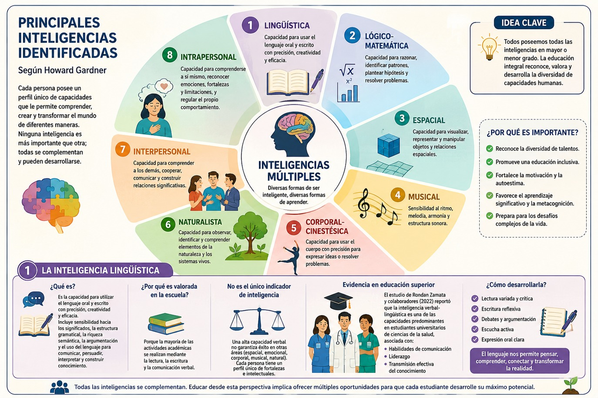
Realiza la siguiente actividad para identificar qué inteligencias tienes más desarrolladas, recuerda que ninguna de ella es mejor que las otras, y que lo ideal es trabajarlas todas para desarrollarlas y de esta manera lograr que nuestros aprendizajes se lleven a cabo de manera integral.
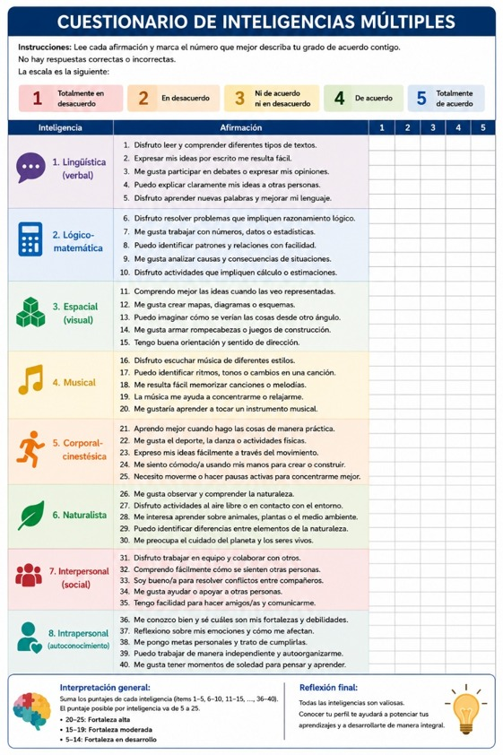
Ahora qué sabes qué inteligencias tienes más desarrolladas y cuáles podrías desarrollar un poco más, te recomendamos que veas la siguiente tabla con sugerencias para realizar actividades dependiendo de las inteligencias a desarrollar:
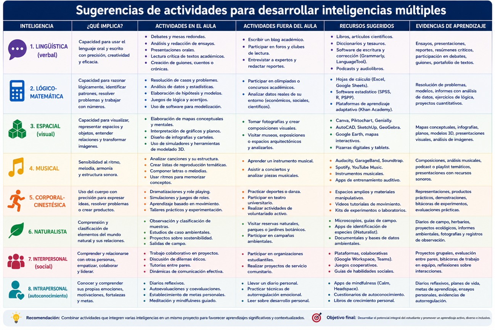
Cómo trabajar las inteligencias múltiples
Finalmente, es importante decir que en nuestro trabajo en la universidad podemos desarrollar las inteligencias múltiples a través de diversas actividades como las que te presentamos a continuación:
Diversificar: Variar constantemente las actividades de aprendizaje para estimular diferentes perfiles.
Diseñar proyectos: Crear proyectos integrales que exijan la combinación de varias inteligencias simultáneamente.
Diagnosticar: Realizar un diagnóstico inicial de las inteligencias dominantes en el grupo.
Valorar diferencias: Aceptar y evaluar positivamente diferentes formas y formatos para demostrar el aprendizaje adquirido.
Observa el siguiente diagrama:
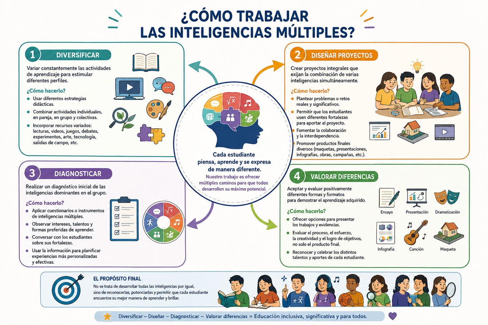
En conclusión, la teoría de las inteligencias múltiples constituye uno de los cambios paradigmáticos más importantes en la psicología de la educación contemporánea. Su principal aporte radica en reconocer que la inteligencia no es una capacidad única ni estática, sino un conjunto dinámico de potencialidades que se desarrollan mediante la interacción entre el individuo y su contexto cultural. Este enfoque favorece una comprensión más inclusiva del aprendizaje y proporciona fundamentos sólidos para diseñar experiencias educativas que reconozcan la diversidad cognitiva de las y los estudiantes.
Asimismo, las inteligencias interpersonal e intrapersonal establecen un puente conceptual con la metacognición y la conducta autorregulada. El conocimiento de uno mismo, la capacidad para comprender a los demás y la regulación consciente de los propios procesos cognitivos constituyen competencias indispensables para enfrentar los desafíos de una sociedad caracterizada por la complejidad, la incertidumbre y el aprendizaje permanente. De este modo, la teoría de Gardner trasciende el ámbito de la psicología cognitiva para convertirse en un referente fundamental de nuestra formación universitaria contemporánea y del desarrollo integral de las personas.
- Armstrong, Thomas (2001). Inteligencias Múltiples. Bogotá: Norma.
- Emst-Slavit, Gisela (2001). Educación para todos: La Teoría de las Inteligencias Múltiples de Gardner,en Revista de Psicología de la PUCP. Vol. XIX, 2.
- Gardner, Howard (2001). Estructura de la mente. Teoría de las Inteligencias Múltiples. Colombia: FCE.
- Rondan-Zamata, Felicitas; Coa-Mamani, Rocío; Gonzales-Miranda, Jorge; Lozada-Miranda, María y Álvarez-Huari, María (2022). Inteligencias múltiples en estudiantes universitarios de ciencias de la salud. Ciencia Latina Revista Científica Multidisciplinar, 6(6), 1010-1022.
Te recomendamos ver estos videos para profundizar sobre este tema:
La motivación y la búsqueda del conocimiento.
Como hemos visto, aprender constituye una de las actividades más complejas que realiza el ser humano. Aunque durante mucho tiempo se privilegió el estudio de las capacidades cognitivas, actualmente existe un amplio consenso en que el aprendizaje depende de la interacción permanente entre procesos cognitivos, motivacionales, emocionales y metacognitivos. En consecuencia, conocer cómo aprendemos implica comprender no solamente qué sabemos o qué estrategias utilizamos, sino también cuáles son las razones que nos impulsan a aprender, las metas que orientan nuestro comportamiento y el significado personal que atribuimos al conocimiento. Precisamente estas son las dimensiones conforman el núcleo de la motivación.
El trabajo de Valle Arias, González Cabanach, Barca Lozano y Núñez Pérez (1997), constituye uno de los referentes fundamentales para comprender esta integración entre cognición y motivación. Los autores sostienen que aprender requiere simultáneamente dos condiciones inseparables: poseer las capacidades cognitivas necesarias y tener la disposición motivacional suficiente para ponerlas en funcionamiento. En otras palabras, no basta con saber cómo aprender; también es indispensable querer aprender. Como señalan los autores, la expresión cotidiana "querer es poder" sintetiza adecuadamente esta doble dimensión del aprendizaje, pues los procesos cognitivos solamente se activan cuando existen metas, intereses y motivaciones que orientan la conducta hacia la construcción del conocimiento.
Esta perspectiva supone abandonar la tradicional separación entre inteligencia y motivación. Durante gran parte del siglo XX ambas dimensiones fueron estudiadas de manera independiente. Mientras las teorías cognitivas se concentraban en explicar el procesamiento de la información, las corrientes conductistas analizaban principalmente los mecanismos motivacionales relacionados con recompensas y castigos. Sin embargo, las investigaciones contemporáneas muestran que ambas dimensiones funcionan como un sistema integrado donde la cognición regula la acción, pero la motivación determina la dirección, intensidad y persistencia del esfuerzo intelectual.
¿Qué es la motivación?
Desde una perspectiva psicológica, la motivación puede definirse como el conjunto de procesos internos que activan, orientan y sostienen la conducta hacia el logro de determinados objetivos. No constituye una característica estable de la personalidad, sino un proceso dinámico que cambia según el contexto, las experiencias previas, las expectativas de éxito y el significado personal que cada uno de nosotros le atribuimos a las tareas que realizamos.
La motivación cumple tres funciones esenciales dentro del aprendizaje. En primer lugar, activa la conducta, impulsándonos a iniciar una actividad académica. En segundo lugar, orienta nuestro comportamiento hacia metas específicas, permitiéndonos seleccionar las estrategias adecuadas para resolver problemas. Finalmente, mantiene nuestro esfuerzo durante períodos prolongados, favoreciendo la perseverancia frente a las dificultades y el abandono de respuestas impulsivas.
Desde el constructivismo, la motivación deja de entenderse como un elemento externo impuesto por el docente y pasa a concebirse como una construcción personal vinculada con los intereses, expectativas y proyectos de cada una de las y los estudiantes. El aprendizaje significativo depende precisamente de esta apropiación subjetiva del conocimiento, mediante el cual las y los estudiantes encuentran sentido en aquello a lo que aprenden y lo incorpora a sus esquemas previos de comprensión.
Motivación intrínseca y motivación extrínseca
Una de las distinciones más importantes dentro de la psicología educativa es la diferencia entre motivación intrínseca y motivación extrínseca. La motivación extrínseca aparece cuando tú como estudiante realizas una actividad para obtener recompensas externas o evitar consecuencias negativas por ejemplo, las calificaciones, reconocimientos, becas, premios o incluso el temor al fracaso. Aunque puede resultar eficaz para iniciar determinadas conductas, su efecto suele ser temporal y depende de la permanencia de los incentivos externos. Por el contrario, la motivación intrínseca surge cuando el aprendizaje posee valor por sí mismo, esto quiere decir, que experimentas curiosidad intelectual, satisfacción al comprender fenómenos complejos y deseo genuino de ampliar tus conocimientos. En este caso, el aprendizaje deja de ser un medio para obtener recompensas y se convierte en un fin en sí mismo.
Las investigaciones contemporáneas muestran que la motivación intrínseca favorece aprendizajes más profundos, mayor creatividad, pensamiento crítico, persistencia frente a la dificultad y mejores niveles de autorregulación. De este modo se reconoce que las y los estudiantes motivados intrínsecamente tienden a utilizar estrategias cognitivas más elaboradas, supervisan continuamente su comprensión y desarrollan una mayor autonomía intelectual. El siguiente diagrama te lo explica:
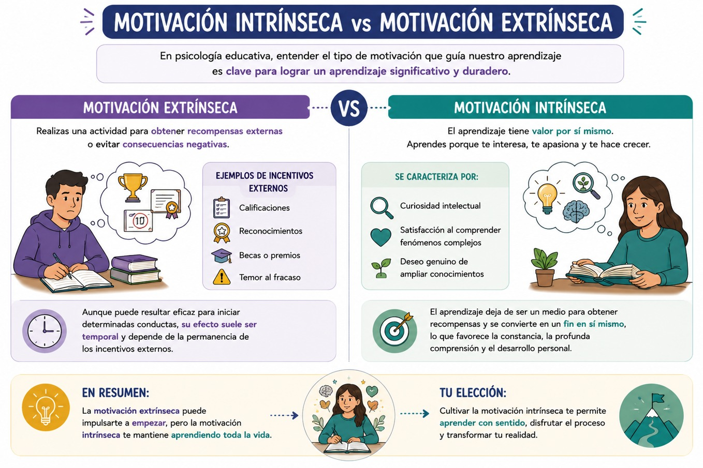
La motivación y el aprendizaje autorregulado
Uno de los principales aportes de Valle Arias y colaboradores (1997), consiste en demostrar que la motivación forma parte integral del aprendizaje autorregulado. Estos autores sostienen que las estrategias cognitivas y metacognitivas solamente producen resultados cuando el estudiante posee suficiente voluntad para utilizarlas de manera consciente y sostenida. La regulación del aprendizaje requiere tanto habilidad (skill) como voluntad (will), dos dimensiones inseparables que interactúan permanentemente durante la resolución de tareas académicas.
Desde esta perspectiva, la metacognición no consiste únicamente en conocer estrategias de aprendizaje. También implica regular la propia motivación, mantener el compromiso con las metas establecidas y modificar las estrategias cuando las condiciones cambian. De este modo se considera que la o el estudiante autorregulado supervisa simultáneamente sus procesos cognitivos y motivacionales, evaluando continuamente si sus esfuerzos lo acercan a los objetivos propuestos.
La búsqueda del conocimiento como necesidad humana
La motivación hacia el conocimiento posee además una profunda dimensión antropológica. Diversos autores sostienen que la curiosidad constituye una característica inherente al ser humano. Desde la filosofía clásica, Aristóteles afirmaba que "todos los hombres desean por naturaleza saber", reconociendo que el conocimiento responde a una inclinación fundamental de la condición humana. Desde el pensamiento complejo, esta búsqueda adquiere una dimensión aún más amplia. Edgar Morin sostiene que conocer implica aprender a navegar la incertidumbre, reconocer la incompletud del conocimiento y mantener una actitud permanente de apertura frente a nuevas perspectivas. La motivación deja entonces de orientarse únicamente hacia la acumulación de información para convertirse en una disposición permanente hacia la comprensión crítica de la realidad. Observa el siguiente diagrama:
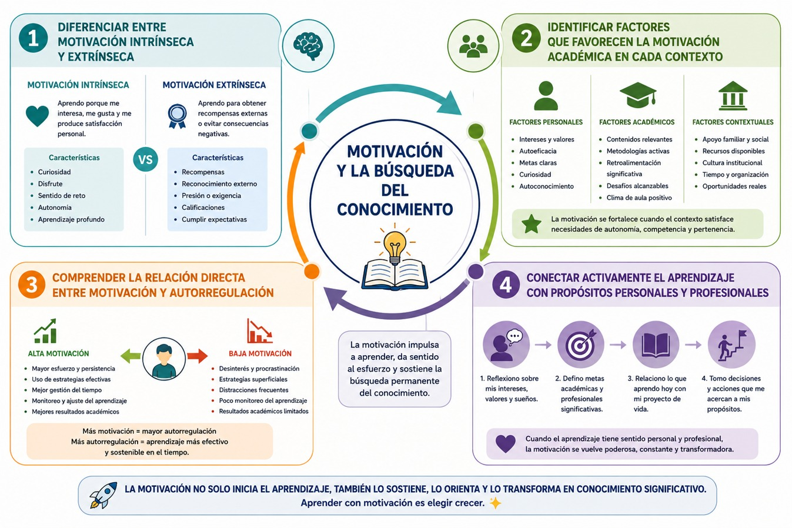
Realiza la siguiente actividad: Contesta este cuestionario e identifica los factores que motivan tus estudios universitarios.
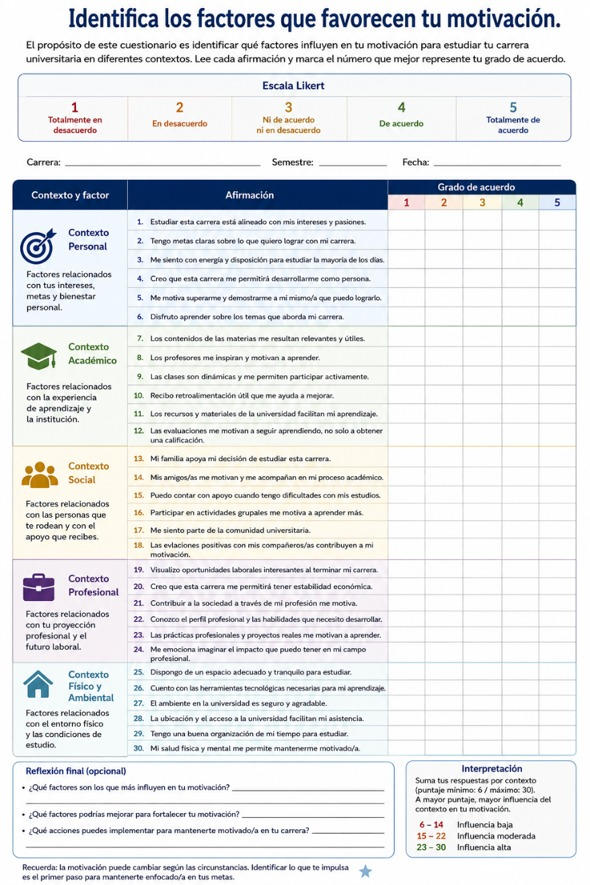
- Estrategias para fomentar la motivación:
- • Establecer metas claras y alcanzables que proporcionen dirección y sentido de progreso.
- • Proporcionar feedback constante y constructivo para orientar y validar el esfuerzo.
- • Conectar los contenidos teóricos con la realidad actual del profesionista.
- • Crear experiencias de logro que fortalezcan la percepción de autonomía y capacidad.
- • Fomentar activamente la curiosidad y promover la búsqueda autónoma del conocimiento.
El siguiente esquema te ayudará a visualizar estos puntos:
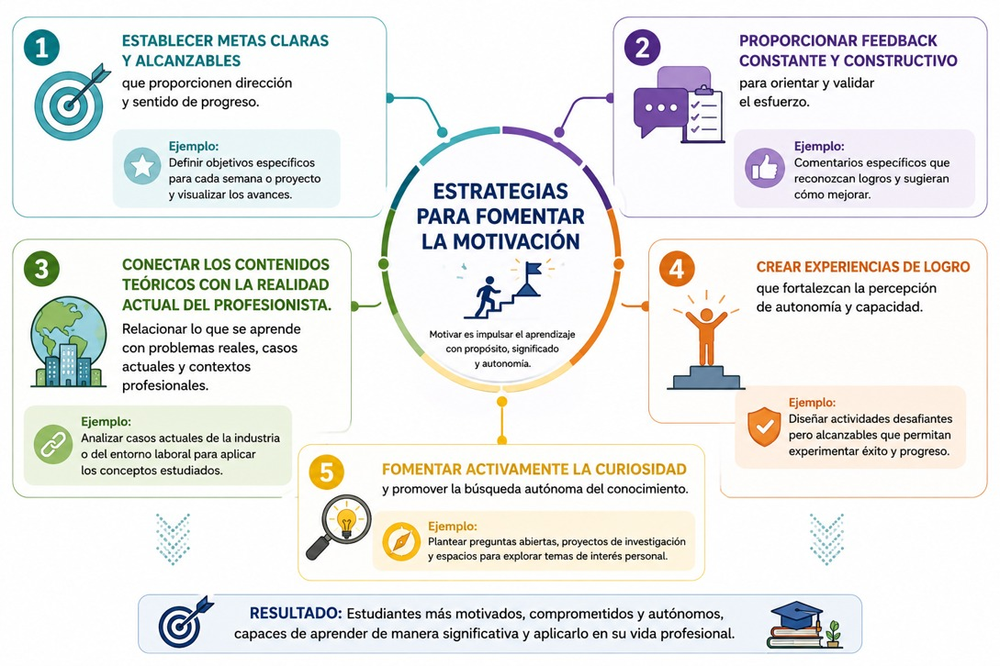
- Barca, Alfonso, González, Ramón, Núnez, José y Valle, Antonio (1997). Motivación, cognición y aprendizaje autorregulado. (55) 206. España: Revista Española de Pedagogía. p.p. 137-164
Te recomendamos ver estos videos para profundizar sobre este tema:
La inteligencia emocional. Emociones para el aprendizaje.
Durante siglos predominó la idea de que la razón y la emoción constituían procesos opuestos. La tradición cartesiana consideraba que el pensamiento racional debía controlar y, en ocasiones, suprimir las emociones para alcanzar un conocimiento objetivo. Sin embargo, los avances recientes en neurociencias, psicología cognitiva y educación han demostrado que esta dicotomía resulta insostenible. Actualmente se reconoce que toda actividad cognitiva está profundamente influida por los estados emocionales.
Antonio Damasio fue uno de los primeros neurocientíficos en demostrar que las emociones participan activamente en la toma de decisiones, la memoria, la atención y el razonamiento. Lejos de obstaculizar el pensamiento, las emociones proporcionan la información necesaria para seleccionar alternativas, establecer prioridades y orientar el comportamiento hacia objetivos significativos. Gracias a ello ahora reconocemos que aprender constituye simultáneamente un proceso cognitivo y emocional. Ningún conocimiento se construye al margen de los intereses, expectativas, experiencias afectivas y relaciones sociales de las y los estudiantes.
El concepto de inteligencia emocional fue introducido por Peter Salovey y John Mayer en 1990, quienes la definieron como la capacidad para percibir, comprender, utilizar y regular las propias emociones y las de otras personas con el propósito de favorecer el pensamiento y la adaptación. Posteriormente, Daniel Goleman popularizó esta perspectiva al mostrar que el éxito académico, profesional y social depende no solamente del coeficiente intelectual, sino también del desarrollo de competencias emocionales relacionadas con la empatía, el autocontrol, la motivación y las habilidades sociales.
Aunque existen diferentes modelos, la mayoría coinciden en cinco competencias fundamentales:
- • Autoconciencia emocional.
- • Autorregulación emocional.
- • Motivación personal.
- • Empatía.
- • Habilidades sociales.
Estas competencias permiten afrontar situaciones complejas, mantener relaciones interpersonales saludables y perseverar frente a las dificultades propias del aprendizaje universitario. A continuación las puedes ver en este gráfico:
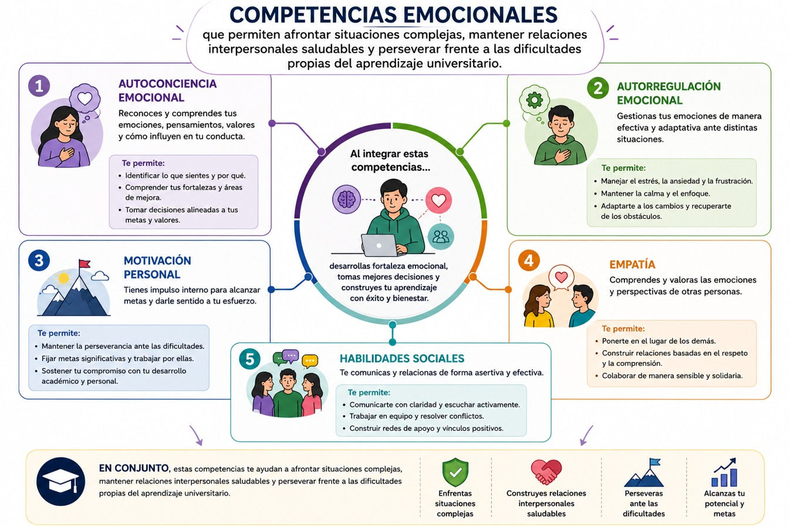
Ahora reconocemos que las emociones influyen sobre prácticamente todos los procesos cognitivos involucrados en el aprendizaje. La atención, por ejemplo, se dirige preferentemente hacia estímulos que poseen significado emocional. Del mismo modo, la memoria recuerda con mayor facilidad aquellos acontecimientos asociados con experiencias afectivas intensas. Por ejemplo, Barbara Fredrickson explica este fenómeno mediante la teoría de ampliación y construcción (Broaden-and-Build Theory), según la cual emociones positivas como la curiosidad, el interés, la esperanza y la satisfacción amplían el repertorio cognitivo, favorecen la creatividad y fortalecen la resolución de problemas. Por el contrario, emociones como ansiedad extrema, miedo o desesperanza reducen la flexibilidad cognitiva, limitan la memoria de trabajo y dificultan el razonamiento complejo. Ello explica por qué estudiantes con elevadas capacidades intelectuales pueden presentar bajo rendimiento cuando experimentan elevados niveles de estrés académico (García, 2005).
Responde al siguiente cuestionario de autoconocimiento emocional, sé honesta u honesto contigo mismo para que sepas en qué dimensiones debes poner atención para su desarrollo:
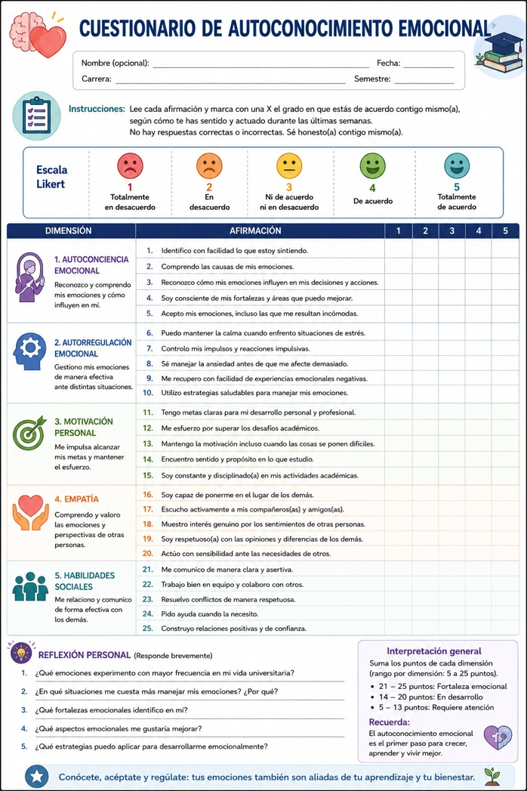
Inteligencia emocional y metacognición
La inteligencia emocional mantiene una estrecha relación con la metacognición. Mientras esta última implica conocer y regular los propios procesos cognitivos, como hemos visto, la inteligencia emocional supone reconocer y regular los estados afectivos que acompañan dichos procesos. Cuando tú, como estudiante, identificas que la ansiedad está afectando tu concentración puedes aplicar estrategias específicas de regulación emocional antes de continuar estudiando. Del mismo modo, reconocer la frustración ante una tarea difícil te permitirá replantear objetivos, modificar estrategias o solicitar ayuda oportunamente.
Así, la autorregulación del aprendizaje requiere, por tanto, una doble regulación: cognitiva y emocional. Ambas dimensiones interactúan constantemente durante la planificación, supervisión y evaluación del propio desempeño.
Dentro del contexto universitario, determinadas emociones favorecen especialmente la construcción del conocimiento:
- • Curiosidad intelectual, que impulsa la exploración de nuevas ideas.
- • Interés, que sostiene la atención durante el estudio.
- • Confianza, que fortalece la autoeficacia.
- • Esperanza, que mantiene el esfuerzo frente a las dificultades.
- • Satisfacción, que consolida la motivación intrínseca.
En este gráfico puedes ver estas emociones y su contexto:
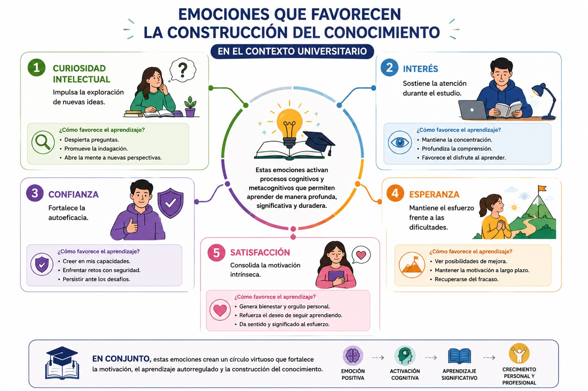
Por otra parte, emociones como miedo al fracaso, ansiedad excesiva, apatía o frustración persistente pueden convertirse en obstáculos para el aprendizaje si no existen estrategias adecuadas de regulación emocional. Desde esta perspectiva, educar emocionalmente no significa sustituir el aprendizaje disciplinar, sino crear las condiciones afectivas que hacen posible un aprendizaje profundo, significativo y duradero. Mira la relación entre esto en el siguiente diagrama:
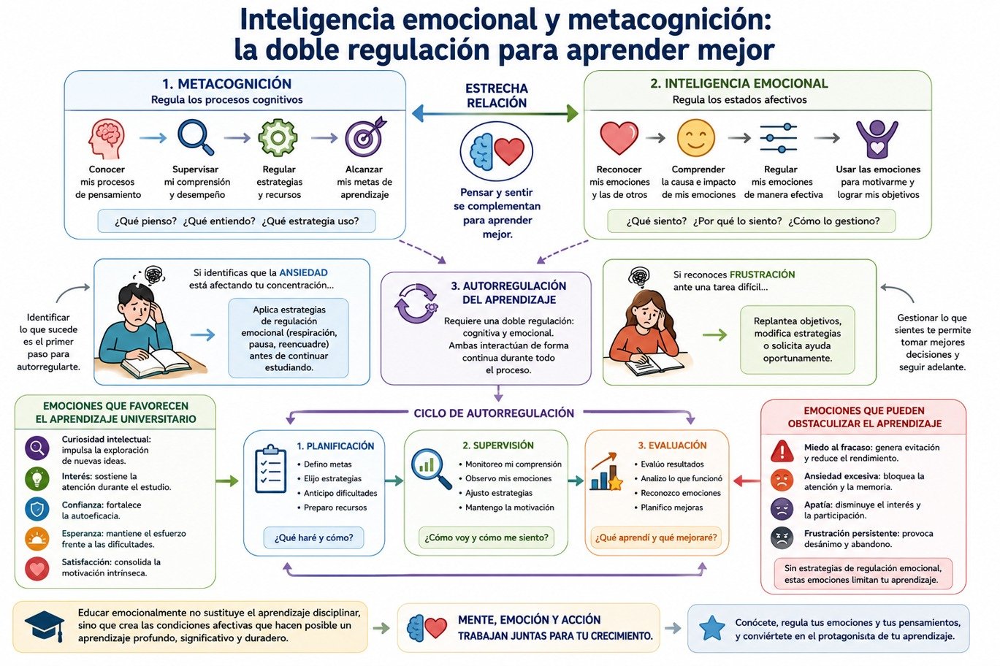
En síntesis, en el marco del pensamiento complejo la cognición, emoción, motivación y metacognición forman un sistema integrado donde cada dimensión influye recursivamente sobre las demás. Comprender esta interdependencia permite superar las tradicionales fragmentaciones del conocimiento y avanzar hacia una educación verdaderamente integral, capaz de formar estudiantes autónomos, críticos, emocionalmente competentes y comprometidos con el aprendizaje permanente.
- García, Lourdes (2005). Psicología Positiva. La teoría de ampliar y construir de las emociones positivas de Barbara Fredrickson. Hojas informativas de l@s psicólog@s de las Palmas, n. 73, febrero 2015. Colegio oficial de psicólogos de las Palmas.
Te recomendamos ver estos videos para profundizar sobre este tema: